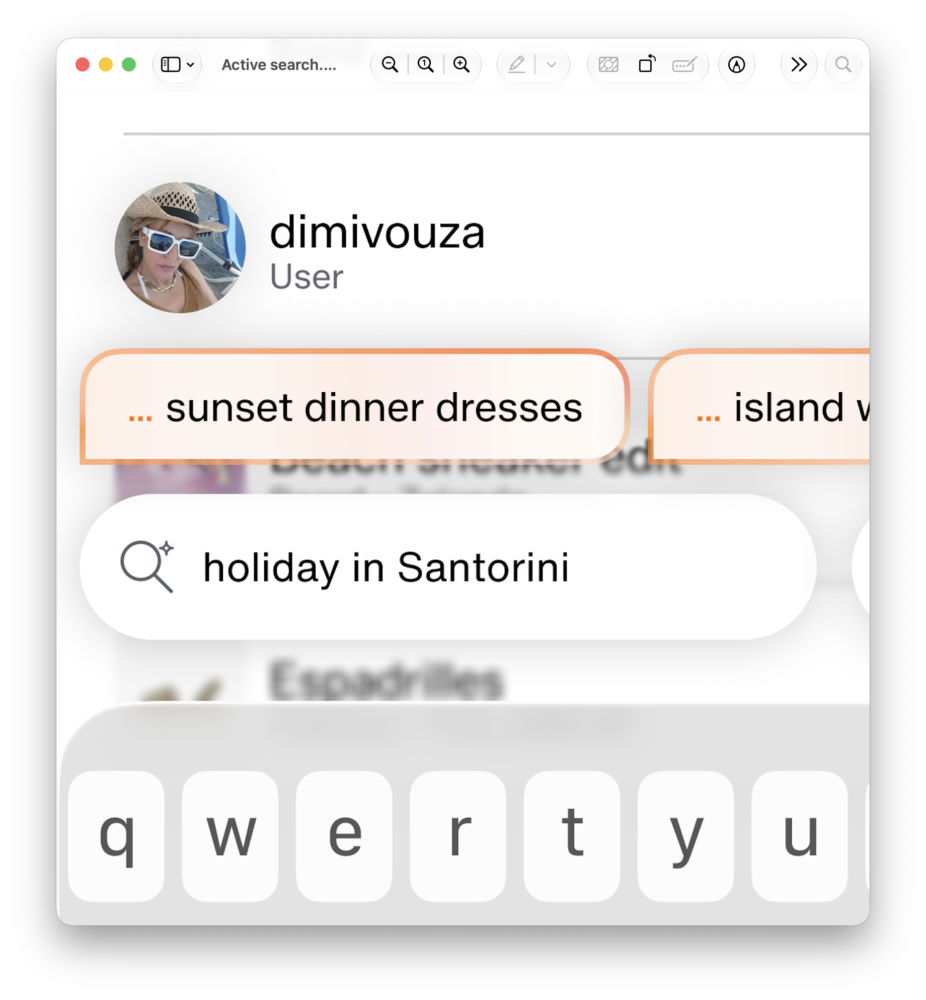
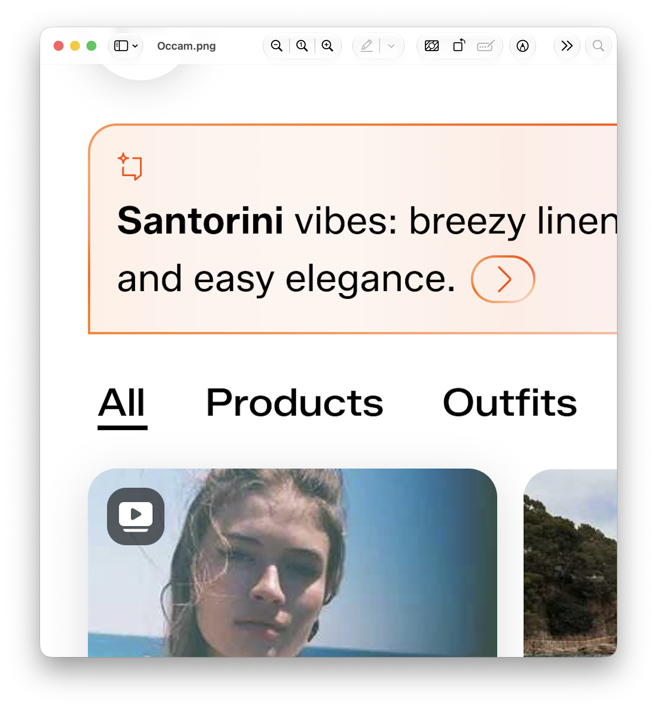
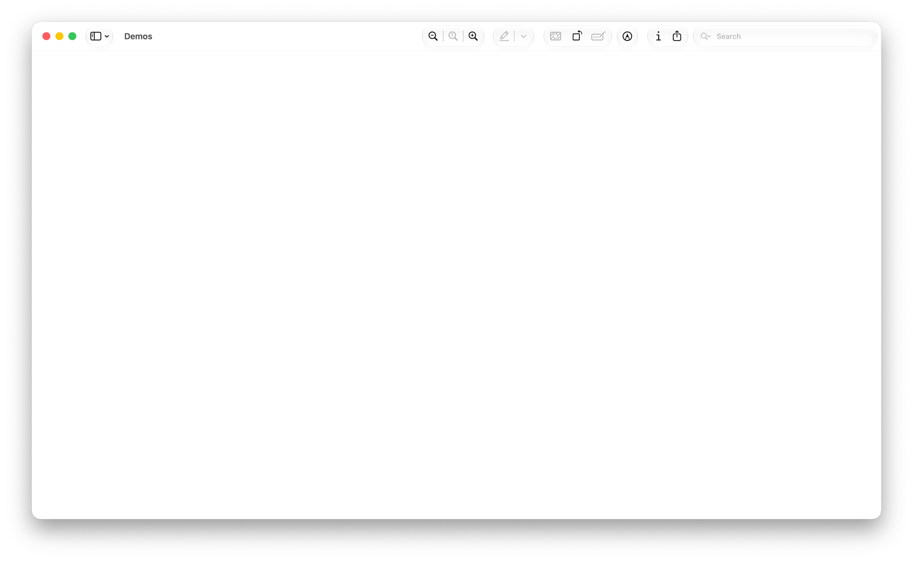

Zalando · Jun–Sep 2025
Occam
Zalando's full discovery experience (search, feed, AI, inspiration) was built by five separate teams with no shared vision. The highest-potential opportunity in the product, unclaimed. I decided to take it on.


The problem
Fragmentation by design
Five teams split the discovery experience between them. Each ran its own roadmap and its own version of what mattered, and each bolted AI features onto discovery rather than weaving them in. Design had a voice in those rooms, but product and engineering set the priorities. Everyone optimised for incremental wins and hit resistance on the bigger bets. I did not read those bets as wrong. No single team held the mandate to own them, so I took that on.
The vision
The prototype was the argument
I work in The Studio, Zalando's in-house innovation lab, which runs two to three years ahead of the product roadmap. From there, I could work across team boundaries. Teams had ambitions but no shared direction, so I set out to build one: a two-year, end-to-end vision for the whole discovery experience. I kept the method direct. I talked to people, heard the frustrations the official roadmaps left out, and went straight to showing.
I decided first not to propose anything new. Each team already had a vision, and many of them overlapped or quietly conflicted. I mapped what every team was working toward, resolved the contradictions, cut the redundancies, and found what they genuinely shared. Out of that work I drew three principles, and they drove every decision after:
Inspiration is everywhere · Search is a layer · Everything is a feed
They were not brand language. I used them to decide what got merged, what got cut, and what got dropped. The product teams had built the AI assistant as a separate tab. Search is a layer meant it could not stay there, so I rebuilt it as a mode woven into every surface.



The prototype
Concrete enough to take to the Co-Founder
I did not write a strategy document. I made the argument itself a working app. The app ran AI-integrated search, social commerce patterns, inspiration-to-purchase flows, and visual search, and I built it in SwiftUI, Apple's framework for native iOS apps, with AI writing much of the code, not a Figma mockup. Because it ran as a real app, all five teams could see their own work inside it.
What customers said
12 Gen Z customers, three mechanics tested
I tested the prototype with 12 Gen Z customers in one to one remote interviews. Customers responded most strongly to the feed-style discovery. They kept wanting to scroll, and one said, "Zalando is more than an e-commerce." Customers needed a moment to learn the iterative AI search, but rated its long-term appeal high. They compared it to asking a salesperson rather than typing into a box. Customers gave visual search the strongest appeal of the three, and flagged privacy as the one thing to calibrate. They called it "a standout," and raised use cases I had not anticipated.
Outcomes
The roadmap item was the baseline
I took the working prototype to a Zalando co-founder and the SVPs, and they backed it. Zalando folded the vision into its product roadmap for the following two years. Teams now start from that vision rather than reaching for it. Designers inside those fragmented teams gained something they could use directly. They walk into product conversations with co-founder-level backing and customer research already on the table, a tested reference rather than a vision on a slide.